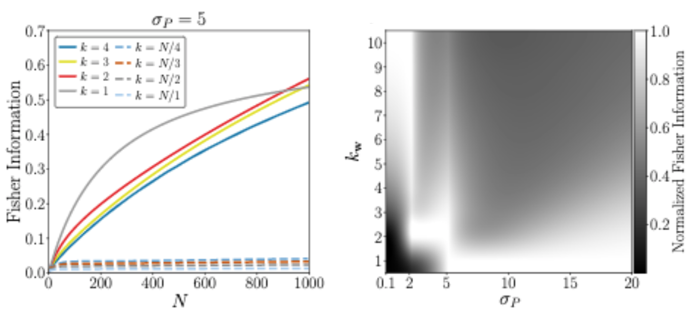

Sparse, Interpretable, and Predictive Functional Connectomics with UoILasso
Pratik S. Sachdeva, Sharmodeep Bhattacharyya, Kristofer E. Bouchard
[paper] [slides]

Heterogeneous synaptic weighting improves neural coding in the
presence of common noise
Pratik S. Sachdeva, Michael R. DeWeese
[abstract] [poster]
Pratik S. Sachdeva, Michael R. DeWeese
[abstract] [poster]

On the Stability of Strange Dwarf Hybrid Stars
Mark G. Alford, Steven P. Harris, Pratik S. Sachdeva
[paper] [abstract] [poster]
tl;dr: We showed that certain stars, previously thought to be stable, are actually unstable. [read more]
Mark G. Alford, Steven P. Harris, Pratik S. Sachdeva
[paper] [abstract] [poster]
tl;dr: We showed that certain stars, previously thought to be stable, are actually unstable. [read more]
Neutron stars are among the most dense objects in the universe. But there
are hypotheses that even denser objects could exist: hybrid stars. These
stars are so dense that the neutrons in their core have broken down,
forming a soup of strange quarks.
Physical systems typically like being in equilibrium. If we mess with that equilibrium - perturb it slightly - the system will strive to restore itself back to the equilibrium state. This manifests as oscillations, much like a pendulum will oscillate when you tap it. The same is true for stars, even those as dense as hybrid stars: they'll undergo a variety of oscillations when they're perturbed.
But sometimes, things go wrong. In the right circumstances, a perturbation might cause the system to lose control. In the case of hybrid stars, these perturbations could cause them to collapse into black holes. Such stars are considered unstable.
In this project, we analyzed the stability of these theoretical hybrid stars. We showed that a certain class of hybrid stars previously thought to be stable are actually unstable, and therefore doomed to collapse into black holes.
Physical systems typically like being in equilibrium. If we mess with that equilibrium - perturb it slightly - the system will strive to restore itself back to the equilibrium state. This manifests as oscillations, much like a pendulum will oscillate when you tap it. The same is true for stars, even those as dense as hybrid stars: they'll undergo a variety of oscillations when they're perturbed.
But sometimes, things go wrong. In the right circumstances, a perturbation might cause the system to lose control. In the case of hybrid stars, these perturbations could cause them to collapse into black holes. Such stars are considered unstable.
In this project, we analyzed the stability of these theoretical hybrid stars. We showed that a certain class of hybrid stars previously thought to be stable are actually unstable, and therefore doomed to collapse into black holes.
Beam Single Spin Asymmetries in Electron-Proton Scattering